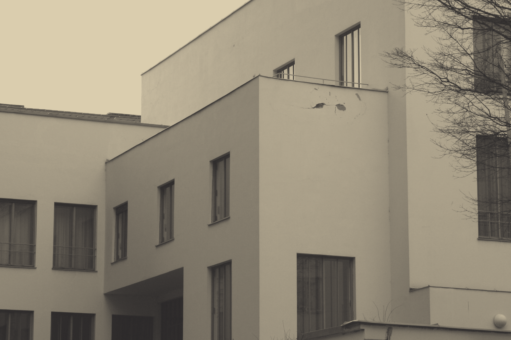

Getting lost
Up and down the stairs
The Tractatus is built like a house. You climb, you descend, you lose the way.

Getting lost
The Tractatus is built like a house. You climb, you descend, you lose the way.
Symbolic system
Its full title is the Tractatus Logico-Philosophicus. Some emphasise the Philosophicus; others the Logico. Below are all the symbols — every non-alphanumeric character — of the text.

Colophon
The graph. The Ogden 1922 translation is split into 2,025
sentences (NLTK Punkt). Each sentence is embedded with the
all-MiniLM-L6-v2 sentence-transformer; the embedding matrix is then
turned into a k-nearest-neighbours graph with scikit-learn
(sklearn.neighbors.kneighbors_graph), and edges below
a cosine-similarity threshold are dropped. PageRank on the resulting
graph gives every sentence a size — central, recurrent
propositions grow large — and Louvain community detection partitions
the sentences into clusters, each rendered in its own colour.
The 2D spiral. The flat visualisation is a turtle walk. Starting at the centre, each sentence is written in one of four handwriting fonts; its rendered width is measured, the cursor steps forward by exactly that width and then turns ninety degrees — a right-angle spiral that fills the plane. Seen straight down it reads as one continuous coloured line of handwriting: PageRank scales each sentence, the Louvain community tints it, so the central, recurring propositions loom large and their families share a hue. Open the full interactive 2D spiral →
The 3D spiral and the film. The three-dimensional viewer runs the identical walk but also lifts the cursor a constant step in z per sentence, so the plane becomes a slowly climbing rectangular corkscrew, shown in three-quarter perspective. The ninety-second film is a scripted camera flight through that corkscrew — a high top-down turn over the whole form, a descent skimming low over the handwriting, and a close on the final proposition — captured frame by frame straight from the WebGL viewer, over spoken fragments of the text synthesised with Bark.
The plate. The image above takes every punctuation mark and logical sign of the text, in reading order, and winds it along an Archimedean spiral around a 1929 portrait of its author — the logical and mathematical signs picked out in gold.

Sources